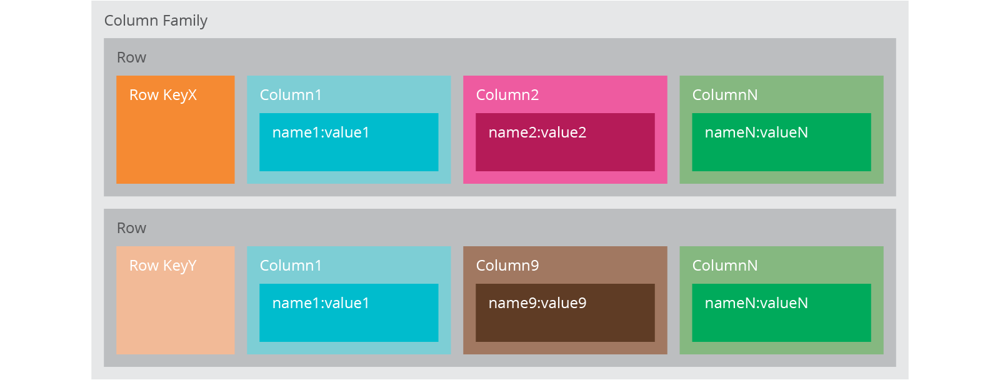

NoSQL: Introduction¶
NoSQL originally refers to “non SQL”, “non relational”, or “not only SQL”. NoSQL databases are increasingly used in big data and real-time web applications. NoSQL databases are not replacing relational database, there are scenarios only fit for NoSQL database. This blog give a brief introduction of NoSQL databases.
Contents
Motivation¶
The benefits you can get from NoSQL include:
Simplicity of design¶
In relational database, the application developers need to design the database scheme to store the data. There is difference between the schema and the in-memory data structure. Then the developers need to handle this ‘gap’. This effort is not delivering business value.
Relational database world invents ORM (Object-Relational-Mapping) to mitigate this challenge.
Horizontal scaling¶
Horizontal scaling means that you scale by adding more machines into your pool of resources whereas Vertical scaling means that you scale by adding more power (CPU, RAM) to an existing machine.
NoSQL databases have better support for simpler “horizontal” scaling to clusters of machines (which is a problem for relational databases)
A cluster of small machines can use commodity hardware and ends up being cheaper at these kinds of scale.
Finer control over availability¶
There is a common need to ensure the service availability. When one node is down, the backup should take effect.
It requires replication mechanism, which means to take the same data and copy it over multiple nodes
There are two kinds of replication methods:
Master-slave replication: Is a one-way replication (from master to slave), only the master database is used for the write operations, while read operations may be spread on multiple slave databases. It reduces the chances of update conflict.
Peer-to-peer replication: It is bi-directional replication, each database (nodes) is publisher and subscriber. If any node goes down, the application will still be functional. Later, once the node is up it can be again brought in sync. This way we can achieve both high availability and fault tolerance. It can avoid loading all writes onto a single point of failure.
Sharding is also important, which is to put different data on different nodes.
Category¶
In general, there are 4 categories NoSQL databases in NoSQL ecosystem:
Key-value store¶
Key-value store is the simplest NoSQL database. The basic data structure is a dictionary or map. Key-value databases are well-suited to applications that have frequent small reads and writes along with simple data models.
Aggregate is a collection of related objects that we wish to treat as a unit, which is indexed by a key that you can use of lookup. Aggregate is opaque to database which is just some big blob of mostly meaningless bits. Key-value store cannot run query not retrieve a part of the aggregate.
Examples: Riak, Redis, Memcached, Berkely DB, Hamster DB, Amazon’s Dynamo, Project Voldemort
Document database¶
Document databases extend the concept of the key-value database. Document databases maintain sets of key-value pairs within a document. So document database is able to see a structure in the aggregate, which allows queries and partial retrievals.
Document database is flexible which does not require schema.
Examples: MongoDB, Couch DB, Terrastore, OrientDB, RavenDB, Notes Storage Facility
Column-family¶
Column-family databases are designed for large volumes of data, read and write performance, and high availability. If your data is small enough to run with a single server, then a column family database is probably more than you need - consider a document or key-value database instead.
Column-family databases store data in column families as rows that have many columns associated with a row key. Column-families are groups of related data that is often accessed together.
Column-family database has two-level aggregate structure, which allows you to store data with keys mapped to values and the values grouped into multiple column families, each column family being a map of data.
Each column family can be compared to a container of rows in an RDBMS table where the key identifies the row and the row consists of multiple columns. The differences are: * various rows do not have to have the same columns * columns can be added to any row at any time without having to add it to other rows.
Examples: Cassandra, Hbase, Hypertable, Amazon SimpleDB
Graph database¶
Graph databases allow you to store entities and relationships between these entities.
In graph databases, traversing the joins or relationships is very fast. The relationship between nodes is not calculated at query time but is actually persisted as a relationship. It means graph databases do not allow dangling relationship, and nodes can only be deleted if they don’t have any relationships attached to them.
Examples: Neo4j, OrientDB, Infinite Graph
Technical concepts¶
There are several technical concepts relevant to NoSQL databases.
Map-reduce pattern¶
Map is a function whose input is a single aggregate and whose output is a bunch of key-value pairs.
Reduce takes multiple map outputs with the same key and combines their values.
While the map function is limited to working only on data from a single aggregate, the reduce function can use all values emitted for a single key.
Eventual consistency¶
Many NoSQL stores compromise consistency in favor of availability, partition tolerance, and speed.
Instead, most NoSQL databases offer a concept of “eventual consistency” in which database changes are propagated to all nodes “eventually” (typically within milliseconds) so queries for data might not return updated data immediately or might result in reading data that is not accurate, a problem known as stale reads.
Additionally, some NoSQL systems may exhibit lost writes and other forms of data loss.
Fortunately, some NoSQL systems provide concepts such as write-ahead logging to avoid data loss.
For distributed transaction processing across multiple databases, data consistency is an even bigger challenge that is difficult for both NoSQL and relational databases.
References¶
NoSQL Distilled, book by Pramod J. Sadalage and Martin Fowler
Thoughtworks NoSQL databases overview.
Written by Binwei@Oslo